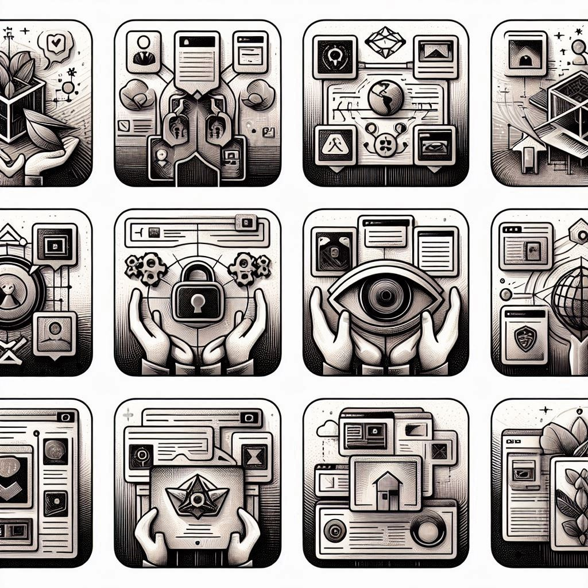
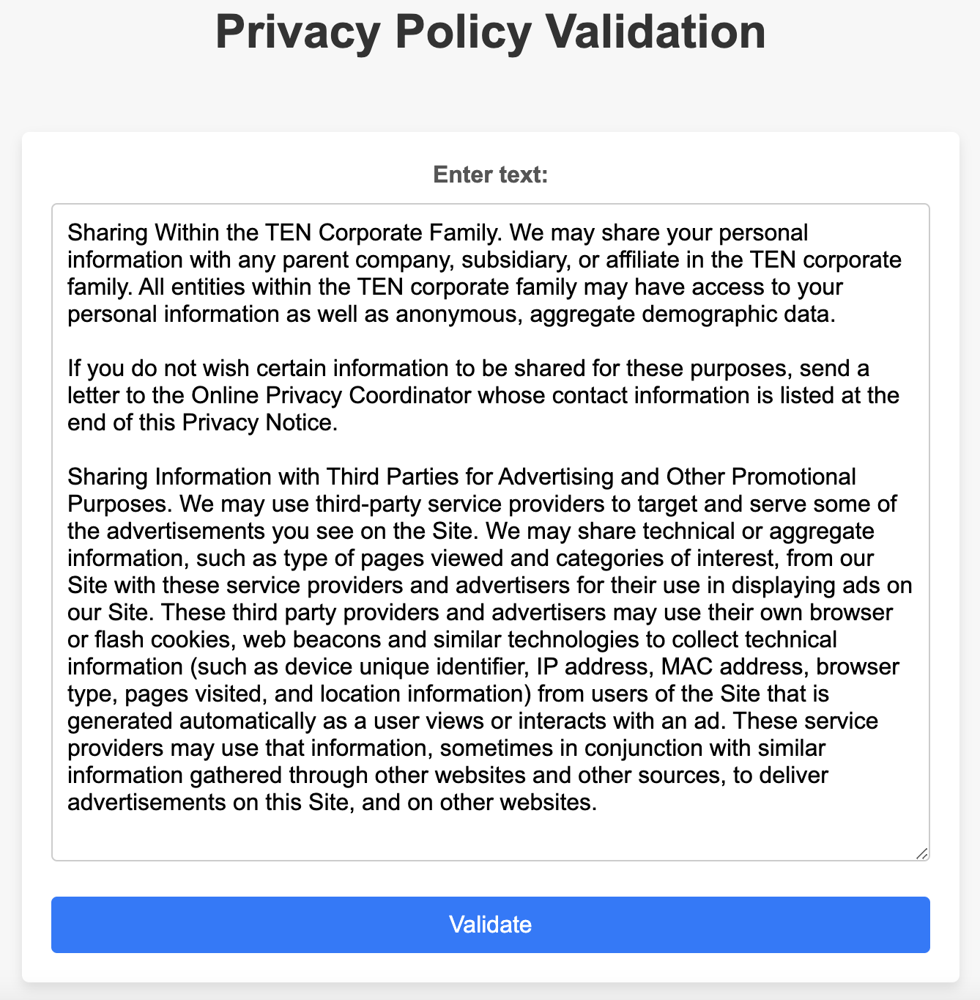
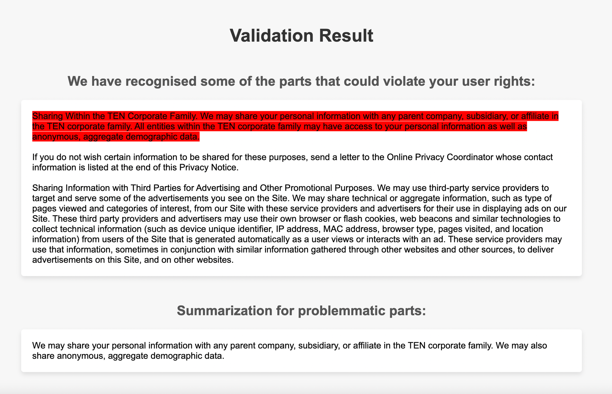
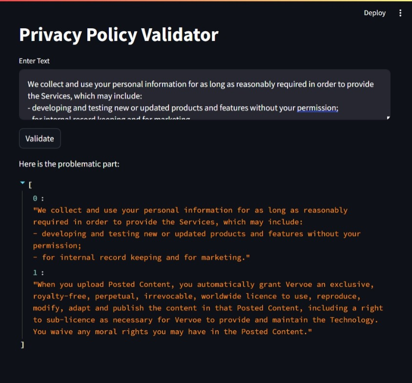

Privacy Policies AI System
An AI system for classifying, evaluating and interpreting Privacy Policies and Terms and Conditions (T&C).
View on GitHubBuilt With
Privacy policies and T&C are crucial documents that outline how companies handle user data.
However, these documents are often lengthy, complex, and difficult for users to understand. This project aimed to develop an AI-powered web application that assists users in evaluating policy documents for acceptability, identifying potential issues, and generating concise summaries.
The project involved four main tasks:
- Develop a versatile web application that leverages natural language processing (NLP) and machine learning techniques to classify and evaluate privacy policies and T&C.
- Highlight problematic phrases within the documents to help users identify potential issues.
- Generate concise summaries of the documents using automated text summarization techniques.
- Provide a user-friendly interface for accessing these functionalities, making the tool useful for content moderation, information retrieval, and document summarization.
Visualisation

Main Page

Result Page

Main Page variation on Streamlit
Workflow
- Data Preparation:
- Preprocessed text data by normalizing case, removing stopwords, tokenizing, and lemmatizing.
- Utilized Word2Vec, trained on Google News data, to transform text into numerical vectors, capturing semantic word relationships.
- Machine Learning Models:
- Implemented various models, including Decision Tree, Random Forest, Support Vector Machine (SVM), Logistic Regression, and Convolutional Neural Network (CNN), for text classification.
- Conducted hyperparameter tuning to enhance model performance.
- Problematic Phrases Identification:
- Developed a mechanism to highlight problematic phrases in text using HTML tags with a red background.
- Summarization:
- Employed the BART model from HuggingFace for automated text summarization, generating concise summaries of the documents.
- Web Application Development:
- Created a user-friendly web application that integrates the NLP and machine learning models, providing an intuitive interface for users to input policy documents and receive evaluations, highlighted issues, and summaries.
Results
The Privacy Policies AI System project successfully delivered a versatile web application that assists users in evaluating privacy policies and T&C. Key results include:
- Accurate Classification: The machine learning models, after hyperparameter tuning, achieved high accuracy in classifying policy documents as acceptable or unacceptable based on predefined standards.
- Issue Identification: The application effectively highlights problematic phrases within the documents, making it easier for users to identify potential issues and areas of concern.
- Concise Summaries: The BART model generates concise and informative summaries of the policy documents, providing users with a quick overview of the main points.
- User-Friendly Interface: The web application offers a seamless and intuitive user experience, allowing users to easily input policy documents and receive evaluations, highlighted issues, and summaries.
Visit the GitHub Repository
For the full code and documentation, visit the GitHub repository.